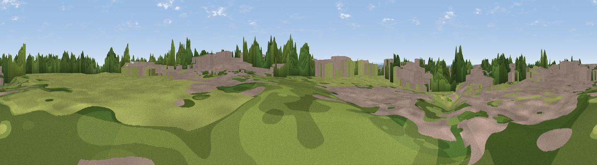

Camperdown
#35199 in England · top 76% of its area beats it · near CamperdownWhere it is
The exact computed spot (NZ 28085 71824). Click the marker for map links.
The view, rendered

A 360° render of this exact spot computed from the terrain model, tree cover and land cover — summer colours, afternoon light, calibrated against photographs of famous viewpoints. Real trees, hedges and buildings will differ in detail.
The panorama
Grey silhouette: terrain skyline in each direction (720 bearings, Earth curvature and refraction included). Dashed green: skyline with trees (+15 m) and buildings (+8 m) as obstacles. Blue strip: how far the ground is visible on each bearing.
Where the view opens
Wedge length = distance to the farthest visible ground on that bearing (vegetation-aware). Rings at 10, 25 and 50 km.
What fills the view
36% grassland · 34% built-up · 18% woodland · 8% cropland · 3% water
Angular shares of the visible panorama (visual magnitude), not map area. Landscape diversity 0.60 (0–1 Shannon).
Key numbers
More beautiful places nearby
The staircase of upgrades: each row has a higher view potential than everything closer. Driving times are estimates from straight-line distance, calibrated against real road routing — check an actual route before setting out.
| Place | Direction | Drive | Score |
|---|---|---|---|
| Viewpoint near Backworth | NE · 3 km | ~7 min | 59.0 |
| Northumberlandia viewpoint | NW · 7 km | ~14 min | 68.7 |
| White Hill | S · 12 km | ~22 min | 69.8 |
| Viewpoint near Sunniside | SSW · 15 km | ~27 min | 77.6 |
| Pontop Pike | SW · 23 km | ~38 min | 77.8 |
| Viewpoint near Longframlington | NNW · 35 km | ~54 min | 79.5 |
| Viewpoint near Rothbury | NW · 36 km | ~54 min | 81.1 |
| Dove Crag | NW · 36 km | ~55 min | 82.3 |
55.04014, -1.56206 · source: osm peak · position refined by local search. Computed location — check access rights before visiting.